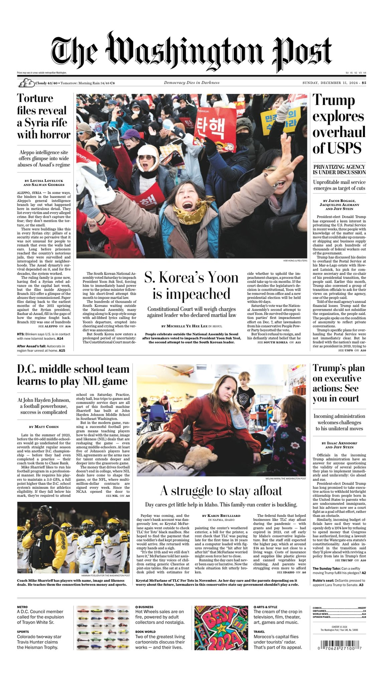
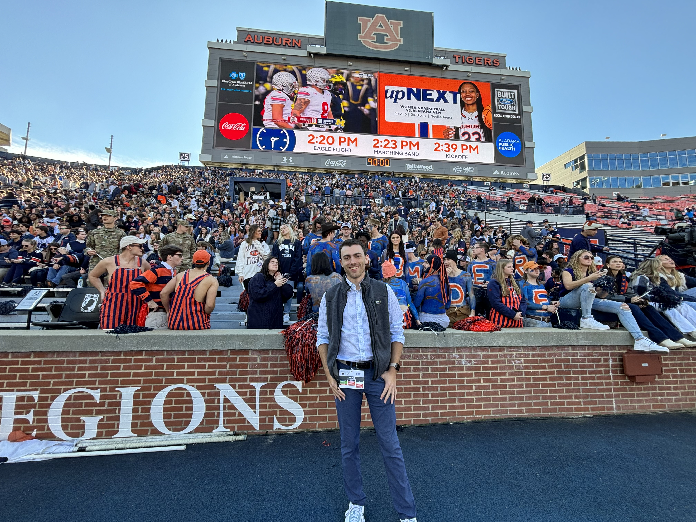
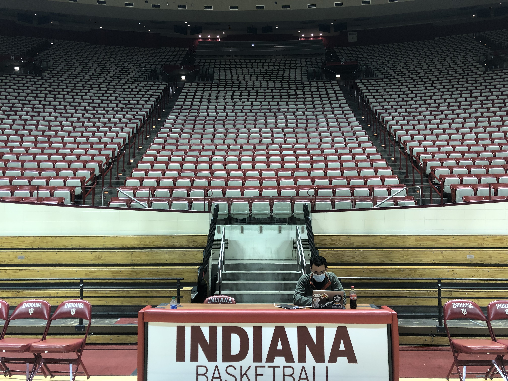
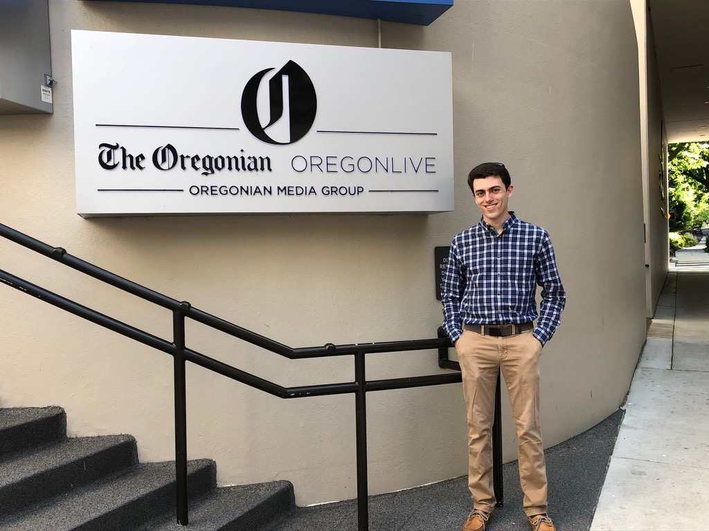
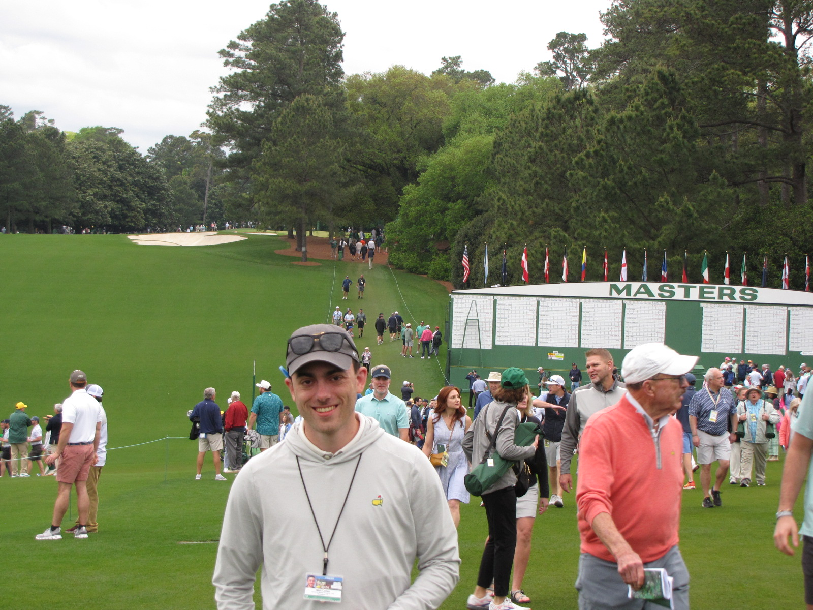

Matt is a journalist with a focus on longform storytelling. To find the intersection of sports with society to share a story far beyond the box score. He is a Washington D.C. area native and will staunchly defend putting Old Bay on anything.
Covering Washington D.C. and Prince George’s County public high school sports including football and basketball. Focusing on telling human interest stories — especially in the region's most undercovered and underfunded schools — and the changing landscape of the sport in the Name, Image and Likeness era, including a Sunday front page longform story profiling a middle school football powerhouse in Southeast D.C. grappling with this new world. Producing feature stories for the print edition and creative game reports on tight deadlines that tell a story beyond the box score.

Assisted students in various University of Maryland classes including an enterprise sports reporting capstone class and a journalist-focused statistics course. Edited student story drafts and provided constructive feedback to aid students in getting published articles. Graded student assignments and hosted office hours teaching students skills with RStudio programming skills — skills I applied to my own work with a focus on AI and data journalism.
Covered athletics at Auburn University, within the highly regarded Southeastern Conference. Wrote more than 650 stories in one year and amassed 6.5 million page views. Led the newspaper in average readership during the one year at the company. Wrote daily coverage, broke athletics news, led coverage on the intersection of sports and business as well as producing long-form features including profiling Auburn's athletics director, tracking down the lost football from a historic play, chronicling a walk-on player's journey home and sharing the behind the scenes of Auburn's famous eagle flight tradition expanding to NFL venues. Localized international headlines like the Israel-Hamas war to activism in Auburn. Covered the 2024 Master's Tournament on the grounds of Augusta National Golf Club, telling stories from inside the rounds of Alabama natives while walking alongside them at golf's most famous venue.

Covered breaking criminal justice news in the Tampa Bay area. Totaled more than 1 million page views in first five months of work, top 10 most read author for the Times in 2023. Reporting from high-profile court cases, holding local sheriff’s offices accountable and building sources in the community. Writing sensitive stories with families and friends who have lost loved ones. Reporting top headline breaking news stories including coverage of Hurricane Ian, a visit from President Joe Biden and trends in Florida crime. Submitting FOIA requests and adept at deciphering police records.

Covered a variety of topics including breaking news, shortages, primary elections, the Baltimore Orioles and the Baltimore Ravens. Contributed story pitches and found new angles adding to the Sun’s coverage. Explored deeper stories in neighborhoods in both Baltimore City and County, telling stories from an area where I spent so much time as a child.

Won the Indianapolis Press Club’s Last Row Scholarship for sports writing. Cover IU athletics as well as news around IU and in Bloomington. Write creative and feature-type game stories — like a viral story about a flash mob of shirtless dudes which led the website in page views, or storming the court with students after a season-altering win. Wrote news features on prominent issues in Bloomington including breaking news of IU forming an unvaccinated students dorm. Work picked up by USA Today. Coverage led to a freelancing opportunity with The Washington Post.

Covered criminal justice breaking news in Pinellas, Hillsborough and Pasco counties. Totaled over 655,000 page views and nearly 70 stories — including four on the front page. Assisted in coverage of Hurricane Elsa, the Surfside building collapse, Red Tide outbreaks and a Stanley Cup parade. Wrote an investigative story looking at animal deaths at a local zoo and told the story of LGBTQ youth at their inclusive summer camp. Worked picked up by the AP and Yahoo.
Covered sports in Oregon during the COVID-19 pandemic. Covered season restarts and wrote feature stories about the Portland Trail Blazers, Portland Timbers and Portland Thorns. Published 60+ stories in roughly 10 weeks. Totaled over 200,000 page views, including one story with 70,000 clicks. Linked work in the Tampa Bay Times and The Ringer.
Led IDS website in page views across four years of undergrad, totaling around 500,000 page views. Led IDS website in total engaged minutes over the same time span by over 200,000 minutes. Published over 200 stories.
- Enterprise, Aug. 2020-Dec. 2021: Named 2021 national collegiate reporter of the year. Covering the COVID-19 pandemic. Reporting award-winning COVID-19 feature stories and investigating the IU football team’s COVID-19 response. Work featured in the Washington Post and the New York Times. Investigated sexual harassment allegations at a Bloomington church, contributing toward charges/removal of the pastor, placing fourth in the 2022 Hearst investigative writing competition. Won multiple diversity coverage awards for a feature on Black families facing the injustice of unmarked graves.
- Men’s Basketball, Aug. 2019-Aug. 2020: Covered the largest sports beat at IU, with daily reporting and many feature stories, including a Hearst-winning story on Bob Knight.
- Women’s Swimming and Diving, Aug. 2018- March 2019: Won a national award for a story on the legacy of Lilly King at IU.
- University of Maryland - Philip Merrill College of Journalism, Master of Arts, Journalism, Expected graduation in 2025. Works as graduate teaching assistant. Serves as student representaive on the journalism collage's general assembly.
- Indiana University - The Media School, Bachelor of Arts, Journalism, Class of 2022
- 2021 Associated Collegiate Press National Reporter of the Year
- 2020, 1st Place, Hearst Journalism Awards Personality/Profile Writing Category
- 2020 Hearst Journalism Awards national championship finalist
- 2022 ACP Story of the Year
- 2022 4th Place, Hearst Journalism Awards, Investigative Writing
- 2022 Indiana Collegiate Press Association Brook Baker Journalist of the Year
- 2022 1st Place, Columbia Scholastic Press Association in-depth/feature writing
- 2022 1st Place, Indy SPJ diversity coverage
- 2022 2nd place, Indy SPJ, written investigations
- 2022 Indy Press Club Last Row scholarship winner
- 2021, 3rd Place, ACP overall online COVID-19 story
- 2021, Honorable Mention, ACP overall Print COVID-19 story
- 2021, 1st place, Spring ACP Best of Show for COVID-19 coverage
- 2021, 5th place, Spring ACP Clips and Clicks awards for news stories
- 2021, SPJ Region 5 Mark of Excellence Finalist, Sports writing
- 2021 1st Place, Indy SPJ non-deadline news
- 2021 1st Place, Indy SPJ sports writing
- 2021 APSE student contest top 10
- 2020, APSE scholarship recipient
- 2020 IU Media School Poynter Scholar
- Beat writing: Wide array of beat writing experience across multiple sports as well as criminal justice and public affairs reporting. Award-winning as a features writer and experienced with quick turnaround deadlines.
- Artificial Intelligence:Proficient in use of quickly chaning world of artificial intelligence after taking University of Maryland courses on use of AI in the newsroom. Experience in using Claude, ChatGPT and Gemini among other LLM platforms in the interest of positive and ethical use of AI as a tool that can aid modern journalism.
- Teaching: Assisted with several undergraduate classes during time at Indiana University as well as during jobs after college. I assisted in teaching a capstone sports enterprise reporting class about NIL in high schools as well as a journalist-focused statistics course.
- Adobe programs: Experienced in the use of Adobe InDesign, Photoshop, XD, Illustrator and Premier
- Coding: Took courses in HTML, CSS and Boostrap website design, all skills used in producing this resume
- Data Graphics: Skilled in use of RStudio, Flourish, Datawrapper and Illustrator to create data visualizations and conduct data reporting.